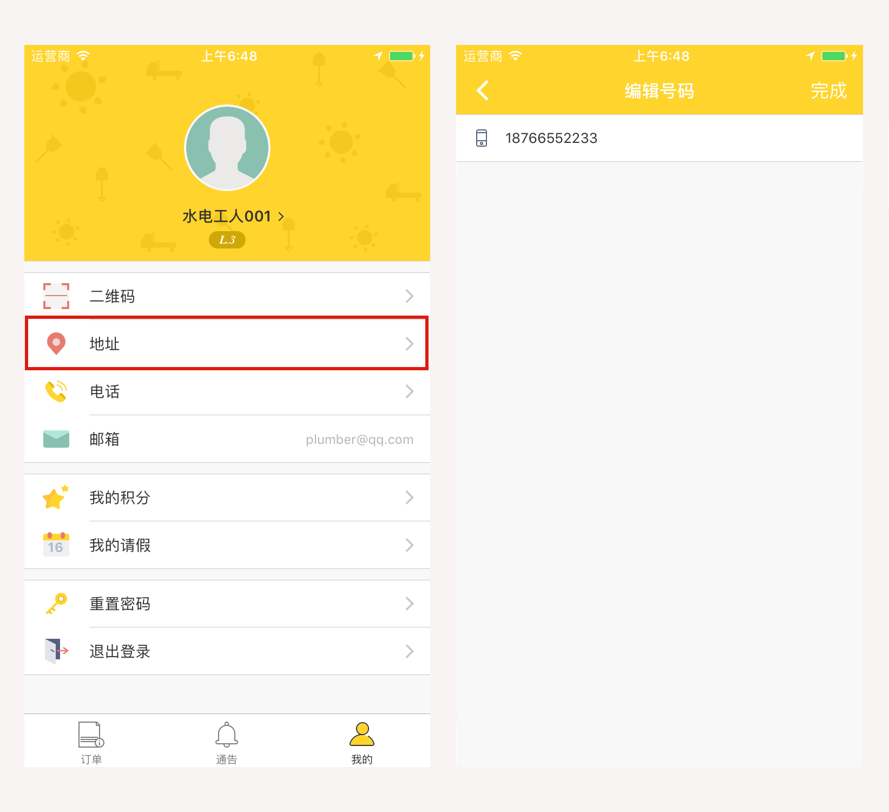
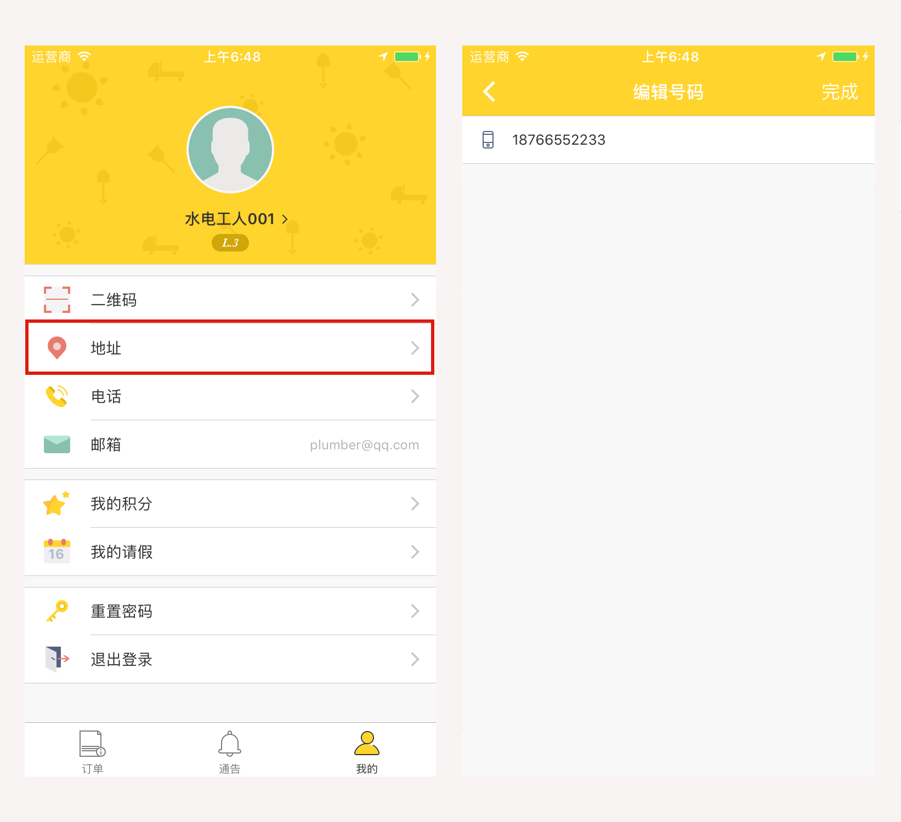
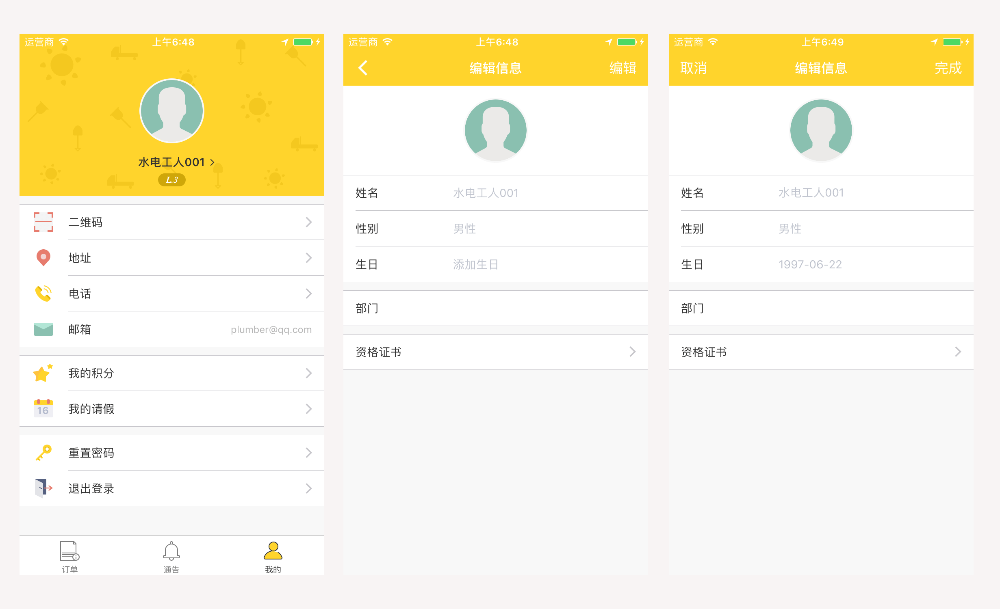
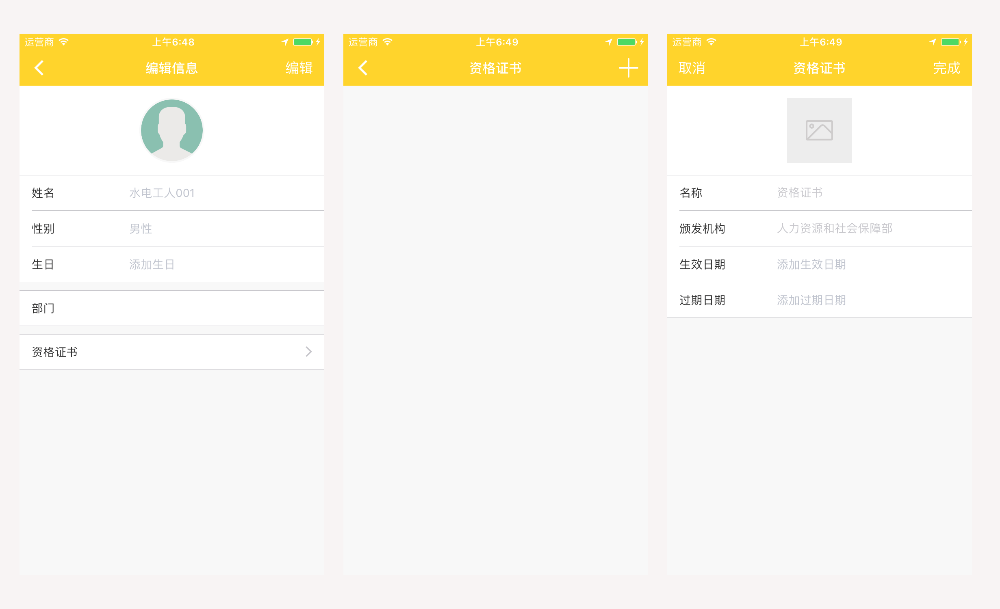
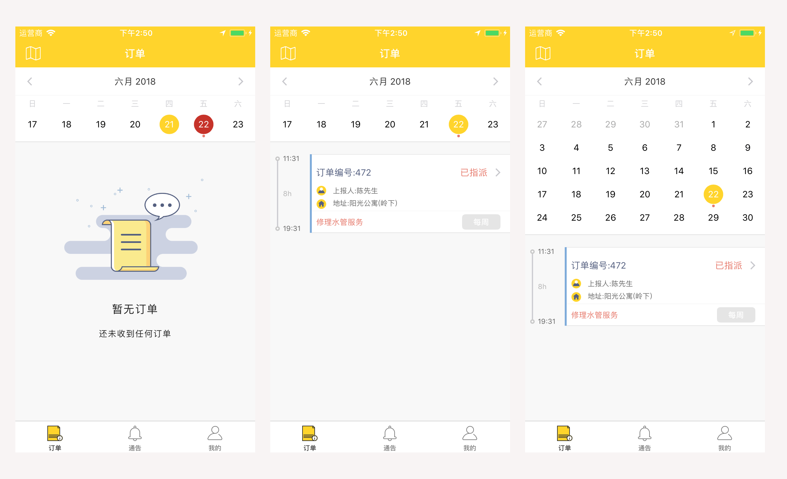
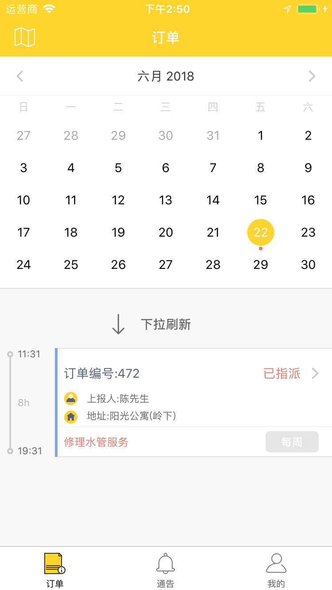
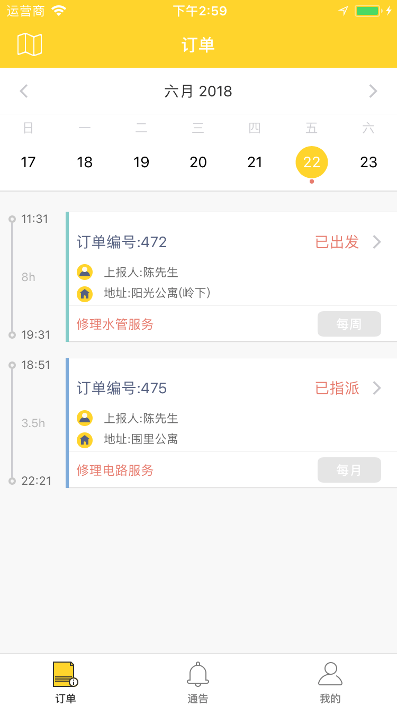
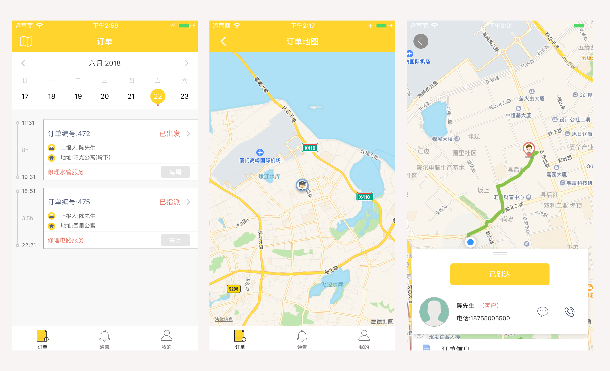
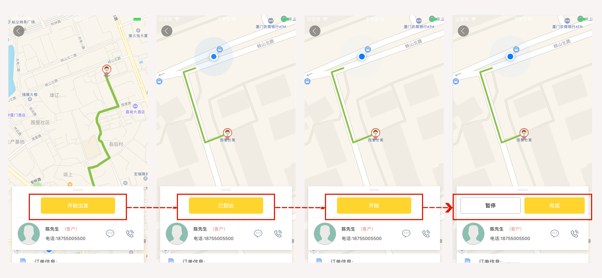

Services Cube 工人手册
Copyright © 2018 Services Cube. All rights reserved.
产品介绍
概述
什么是 Services Cube
Services cube 致力于联合有资质的服务提供商提供多种类型的现场服务，包括保洁服务，安保服务，维修服务，园艺服务等等。 提供给工人的 Services cube APP 使接收订单，管理订单以及保存所有的工作记录变得非常容易。
更重要的使，Services Cube 大大拉近了客户和您的距离，毫无疑问这将帮助您使您的工作更成功、更有回报、并且可控。
在 Services Cube，您可以进行以下及更多操作:
- 接收派遣给您的订单，派遣的依据是地理位置和工作经验等等。
- 以日历形式查看服务的排班与预定详情，清晰明了。
- 浏览订单详情，包括订单信息，工作物资，账单详情，工作记录等等。
- 通过短信和电话与您的客户实时交流。
- 通过实时地图导航至客户的地址。
- 订单状态变动时，通过推送通知，短信或邮箱立即获取新的通知。
- 请假流程从未如此简单，您只需在手机上发起申请，管理员即可审批请假。
- 有了 Services Cube 的通告功能，您再也不用担心错过任何重要通知。
产品介绍
登录APP
概述
使用 Services Cube 服务的前提是，您已经是我们服务供应商的工人了。 供应商会提供给您设置工人账号的必要凭证。基于以上前提，下面的步骤将帮助您进一步了解如何登录您的账号。
基本步骤
下载方式:
Services Cube app 可以从相应的应用商店进行下载 ( 谷歌应用商店 and 苹果应用商店 ).
注意:
- Services Cube 可在以下操作系统中运行: iOS 版本 9.3 (及以上) / Android 版本 4.4 (及以上)。
- 安卓用户应该确保他们的谷歌应用商店已更新。
- 我们建议您定期更新以获得新的特性和修复。
- 如有关于更新设备操作系统的问题，请与您的设备制造商联系。
登录:
打开 Services Cube APP 后，即出现登录注册界面。假设您已经有了公司编号和初始密码，下面是如何正确登录的步骤。（请注意，您的邮箱账号至关重要以防万一您忘记了密码或想要修改密码。）

注意:
- 当你第一次登录时，请使用之前发送至您邮箱的初始密码。
- 请输入“公司”，“邮箱”，“密码”，然后点击“登录”按钮。（如上图所示）
- 第一次登录成功后，请立即更改您的密码。
产品介绍
快速开始: 工作前的准备
概述
为了帮助您更好的理解，本指南将按步骤详细说明工作开始前基础的准备与设置过程。不用担心，我们的系统非常简洁且操作灵活。
基本步骤
- 步骤 1: 添加基本信息 (个人信息和联系信息)
- 步骤 2: 了解订单日历 (对管理订单至关重要)
- 步骤 3: 了解订单详情 (所有与订单相关的信息)
- 步骤 4: 基础工作流程
注意:
上述是帮助您开始的基本步骤。请务必阅读接下来的内容，以便您能够正确地开始工作。
步骤 1: 基本信息
概述
描述
如你所知，除了你的电子邮件地址之外，目前关于您的信息不太充足。您需要做的第一件事是填写所有关于您的基本信息，这样的话，您的管理员才能根据这些信息给您指派工作。
注意:
- 基础设置包括设置联系信息和个人信息。
- 联系信息包括您的地址和联系电话。服务将基于您的地理位置进行，并请确保您的电话号码可用。
- 个人信息包括：头像，姓名，性别，生日和资格证书信息等。
步骤 1: 基本信息
联系信息
概述
由于分配给你的工作是基于你的地理位置的，所以您填写的地址应该是您经常呆着或者出发去工作的地方，例如您的家庭住址。至于电话号码，您的客户只有在您填写了正确的电话号码后才能与您取得联系。
基本步骤
 

- 请先点击下方标签栏中的“我的”。
- 请点击“地址”，然后点击下方的“添加新的地址”。填写所有空格，之后不要忘记点击右上角的“完成”按钮。
- 请点击“电话号码”，然后点击底部的添加按钮。填写所有空格，完成后不要忘记点击右上角的“完成”按钮。
步骤 1: 基本信息
个人信息
概述
某一些个人信息是可选的。然而，您能提供的信息越详细，工作也将完成的更好更快，您的经验级别也将越高。
基本步骤
 
- 请先点击下方标签栏中的“我的”。
- 点击屏幕顶部的头像区域，再点击右上角的“编辑”按钮，然后填入所有的信息。当您完成后，请不要忘记点击右上角的“完成”按钮。
- 点击“资格证书”，再点击右上角的添加按钮。填入所有信息后，点击右上角的“完成”按钮来保存。
步骤 2: 订单日历
概述
描述
Services Cube 强调简洁。我们知道，复杂的日程安排会让您陷入困境，但对于 Services Cube APP 来说，这不再是个问题。
订单页面默认以时间顺序形式展示当天的所有订单。在这个页面，您可以以日历视图查看每天不同状态的所有订单卡片。
内容
日历视图
日历视图区域包含以下内容:
- 左上角的左箭头按钮。按下这个按钮可以将日期调至当前日期之前。
- 右上角的右箭头按钮。按下这个按钮可以将日期调至当前日期之后。
- 下拉屏幕，日历视图将以月视图显示。
订单卡片
订单卡片视图包含以下信息:
- 订单状态 (订单状态随着工作进程而改变)
- 订单编号 (每个订单都有自己不同的订单编号)
- 上报人 (申请服务的客户)
- 服务地址 (服务进行的地址)
- 服务类型 (客户选择的服务类型)
- 服务频率 (单次 / 实时 / 每日 / 每周 / 每月)
- 服务开始时间 (计划的开始时间)
- 服务结束时间 (计划的结束时间)
订单地图
订单地图包含以下信息:
- 订单位置 (所有派遣给您的工作都将按照地理位置展示在地图上)
步骤 2: 订单日历
日历视图
概述
位于屏幕顶部的是日历区域。您可以通过简单的单击查看每天的订单。
在日历区域，日期数字下面有红点的是安排有订单的日期。点击拥有红点的日期将显示那天安排的所有订单。 而点击下列的订单卡片将进入相应的订单详情页。
下拉刷新
如果想要刷新页面或重新加载，请先将页面下拉至月视图，然后再次下拉直至刷新。
步骤 2: 订单日历
订单卡片 & 订单地图
概述
订单卡片是每个订单的摘要，按时间顺序排列在订单列表中。 轻击订单卡片将进入相应的 订单详情 界面。
- 订单卡片按时间顺序排序，除了实时的订单。
- 不同的订单状态有不同的颜色加以区分。

订单状态
订单状态和订单卡片的主题颜色随着工作进程的推进而改变。下面是不同状态对应的主题颜色：

订单地图
所有派遣给您的工作都将按照地理位置展示在地图上。这样，您就能更好地了解所有订单的地理位置，从而更好的安排工作。点击左上方的按钮，即进入订单地图。
步骤 3: 订单详情
概述
描述
轻点订单卡片便可以进入订单详情了。订单详情页面包含了以下信息:
- 地图 & 位置 (通过实时地图到达您客户的准确地址)
- 操作按钮 (通过按钮，手动控制工作进程)
- 联系区域 (通过短信与电话与您的客户实时通信)
- 订单信息 (包括了姓名, 地址, 电话, 服务类型, 服务时间, 负责人等)
- 工作进程 (记录了工作过程中所有阶段的时间进程)
- 工作记录 (整个工作过程中，您都可以通过app做工作记录来说明工作情况)
- 工作物资 (工作中使用的所有工作物资)
步骤 4: 工作流程
概述
描述
一个订单是由一个或多个工人完成的一系列工作。当客户创建订单的时候，会提出相应的服务要求，如服务时间和服务时长、服务频率、工作描述和工作物资等等。 订单在工作过程的不同阶段具有不同的订单状态，以便客户和管理员能够清楚地了解工作进度。
基础工作流程
当订单被指派给您后，系统会立即通过推送通知或短信通知您。所有，请确保时不时地检查一下手机以防有新的通知。此外，所有的订单都将展示在订单日历中， 请参考 订单日历 。
当您进入工作状态时，您需要通过按钮手动控制推进工作进程。当您处在不同的工作阶段时，点击订单详情页的操作按钮，可以轻松改变订单的状态。同时，订单卡片的主题颜色也会随之改变，来提供工作当前状态的可视化指示。 请参考 订单卡片 。
- 在路上 -- 开始动身出发至地图上指定的地址
- 已到达 -- 到达目的地 (只有距离客户位置100米以内才能点击到达)
- 开始 -- 开始工作
- 暂停 -- 暂停工作
- 已完成 -- 已完成指定的工作
Services Cube 将跟踪工作过程中所有阶段的时间进程，例如路程上花费的时间。当您一步步完成工作的同时，订单状态也会同时更新。
